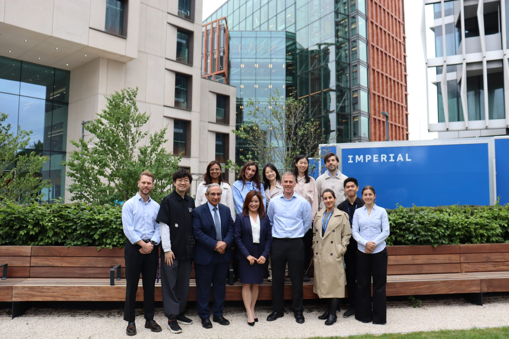
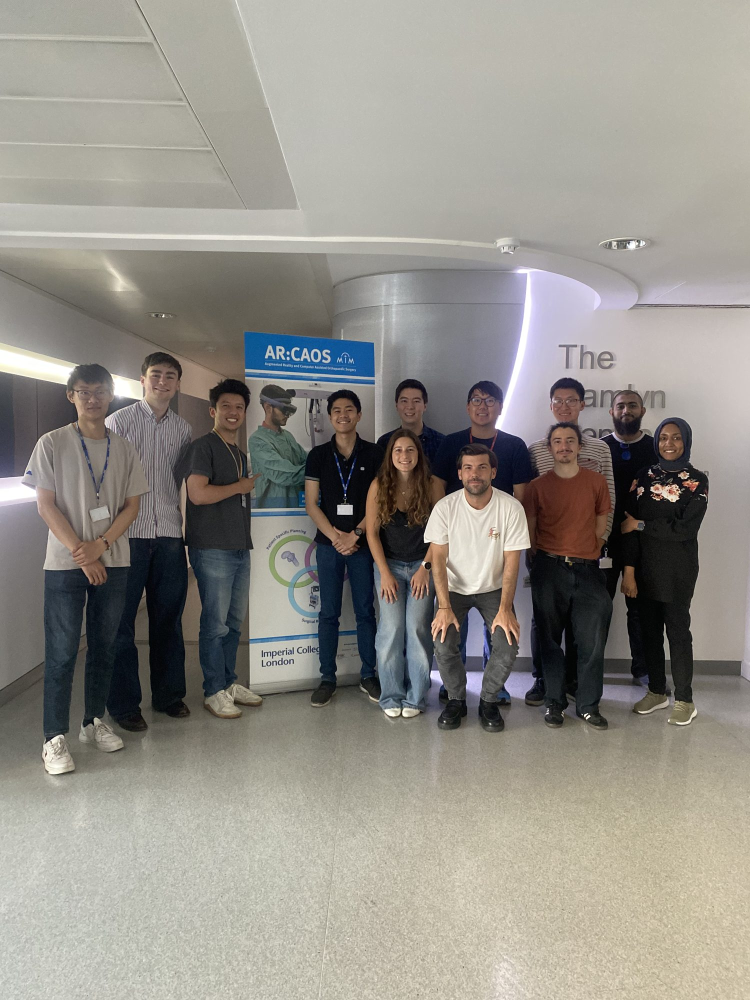
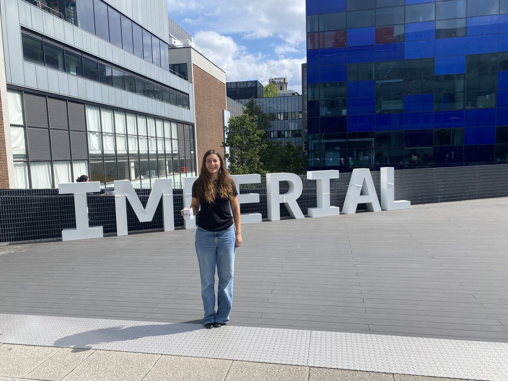
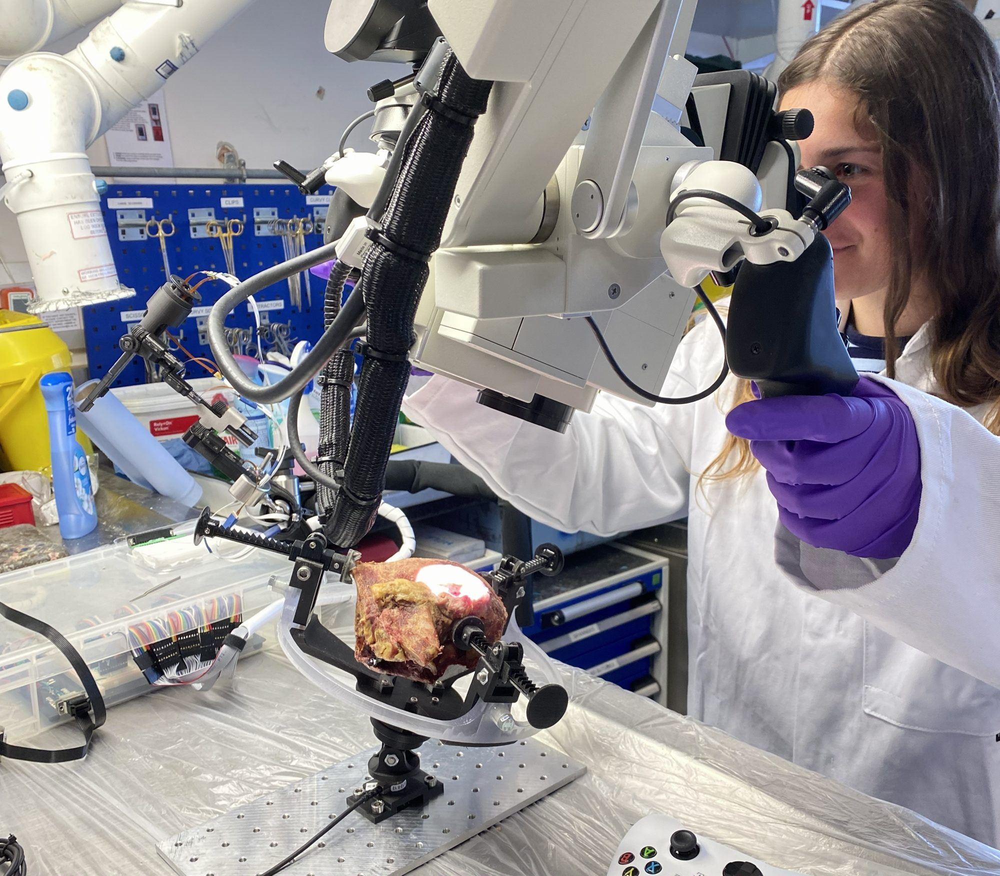
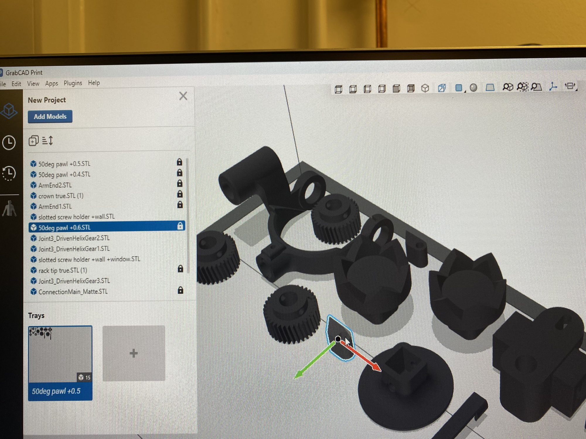
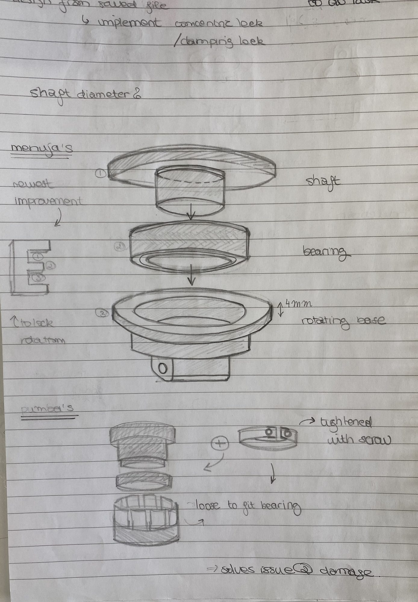

Placement Year in Industry

Outcome
Delivered a reusable kinematic calibration framework for the team, produced key regulatory documents for a medical device, and helped prepare a cadaveric trial. My manager described my contribution as outstanding and recommended me for a University Placement Prize for exceeding expectations.
Context
A 12-month placement as a Medical Robotics Intern in a start-up spinout within the Hamlyn Centre at Imperial College London, a research-driven team developing a compact medical robotic device for cochlear implant surgery with a strong focus on clinical translation. I worked in a multidisciplinary team alongside engineers, researchers and clinicians.
My Contribution
I worked across the whole product: mechanical CAD and prototyping, electronics and PCB layout, Python software, and the calibration and regulatory work that sits between engineering and clinical use. I built the robot's kinematic calibration system, designed a Python GUI for testing and data collection, and prepared core quality-management documents.
Skills & Learning
Technical Details
- Calibration: integrated an optical tracking system to record precise end-effector poses across many joint configurations, then wrote a Python pipeline that applies numerical optimisation to refine the robot's Denavit–Hartenberg (DH) parameters. Finalised as a robust, reusable tool for the team.
- Mechanical: designed and iterated components in SolidWorks, and supported rapid prototyping on Objet500, Markforged and Formlabs 3D printers, plus assembly and integration.
- Electronics: created PCB layouts in KiCad to reduce wiring clutter and enable a more compact build; supported sensor integration and bench testing.
- Software: Python and MATLAB development, including an event-driven Tkinter GUI for testing workflows and data collection, built iteratively from surgeon and colleague feedback into clear technical requirements. Used GitHub (commits, branches, pull requests) and PEP 8 for readable, reviewable code.
- Regulatory: drafted and coordinated Intended Use, Customer and Regulatory Requirements, Design and Use Specification and the Preliminary Hazard Identification File, informed by predicate device research and a QMS induction.
- Trials: helped prepare cadaveric experiments to assess device performance, accuracy and safety, following the required contamination-avoidance procedure.
What I Learned
- How a robot's real-world accuracy is measured and improved by comparing tracked positions with its kinematic model.
- Why medical devices need traceable documentation and risk management, not just working hardware.
- The commercial side of engineering: watching grant applications and investor pitches come together, and how innovation is communicated to secure funding.
- Turning user feedback from clinicians and colleagues into technical requirements.
- Planning, prioritising and presenting: I delivered a 30-minute presentation on the placement to my manager, colleagues and university tutor.
Beyond the Role
- Hamlyn Symposium on Medical Robotics (Jun 2025): ran the event's Instagram coverage, interviewing exhibitors and delegates including da Vinci Surgical and KUKA.
- Great Exhibition Road Festival (Jun 2025): STEM outreach volunteer, demonstrating Hamlyn Centre robotics exhibits to the public.
- Hamlyn Centre Summer School (2025): volunteer supporting the running of the programme.
- Robotics Forum: administration support.
Gallery




